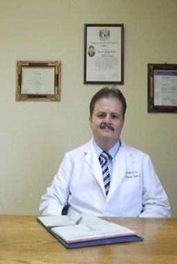

Acerca de Nosotros
Premio nacional de Calidad en Salud 2015
El Hospital de la Luz obtuvo en 2015 el Premio a la Excelencia en Calidad en Hospitales que concede la Secretaría de Salud.
Horarios de Servicio
De Lunes a Viernes
9 am - 1 pm
Sábado y Domingo
10am - 1pm
Horario Nocturno
12am - 6am


¿Qué ofrecemos?

Excelencia Médica
Nuestros médicos cuentan con un alto nivel académico y práctico además de utilizar lo último en tecnología.

Servicio para todos
Atendemos a toda persona con cualquier patología.
Servicios
Medicina Familiar
Área siempre disponible para cualquiera de nuestros pacientes. Agenda una cita para abrir un expediente con nosotros.
Personal Especializado
Contamos con toda clase de especialistas, puedes visitar cualquier área del hospital con la certeza de que alguien con gran experiencia te atenderá
Servicio de Urgencias
Porque nos precupa tu integridad, contamos con el servicio de urgencias y traslado directo al hospital. Horario 24 por 24, todos los días.
Nuevas Instalaciones
Buscamos la comididad de nuestros pacientes, nuestras instalaciones siempre están preparadas para ti.
Directorio Médico

Dr. Eduardo Ochoa
Jefe del departamento de Medicina Familiar
Dra. Milagros Rios
Jefe del departamento de Gineco Obstetría
Dr. Alfredo Guerra
Jefe del departamento de Cirugías
Dra. Nicole Levine
Jefe del departamento de Odontología
Noticias

Servicio de Quirófanos para pacientes privados
Seguir Leyendo
Abril 16, 2017
El hospital de la Luz cuenta con quirófanos habilitados con equipo médico de vanguardia[...]
Seguir Leyendo

Banco Santander y Hospital de la Luz juntos por los niños de México
Febrero 22, 2017
El Fideicomiso por los niños de México, todos por Santander de Banco Santander es una iniciativa que apoya a niños en situació de marginación[...]
Seguir LeyendoLos Diarios Dicen...
 Highly trained personnel, a hospital committed to its patients,
facilities and services of first level, doctors of excellence. Excellence in all aspects
Highly trained personnel, a hospital committed to its patients,
facilities and services of first level, doctors of excellence. Excellence in all aspects
The New York Times
Con la ignaguración de este hospital familiar y especializado se ha mejorado la salud de muchas personas en el país
, de acuerdo a los comentarios del director del hospital se espera que pronto se puedan abrir más centros de salud asociados a esta impecable clínica
El Universal
El Hospital de Luz cambia todo el concepto que se tiene acerca de una clínica de salud, la calidad del equipo de trabajo revoluciona la manera a la que estamos
acostumbrados al visitar un lugar como estos, sin duda alguna un gran paso en el cuidado de las personas, el reflejo del amor y la dedicación a un proyecto que está
dando frutos gracias al esfuerzo de muchas personas.
Excélsior
Síguenos
Conócenos

Dirección
Calle Ezequiel Montes #135, Cuauhtémoc, Tabacalera, 06030 Ciudad de México, CDMX
01-55-5128-1140 Ext. 150 y sin costo al 01-800-161-420
raulg00008@gmail.com
©2017 Hospital de la Luz. Todos los derechos reservados | Diseñado por: Equipo de Desarrollo Web de ESCOM